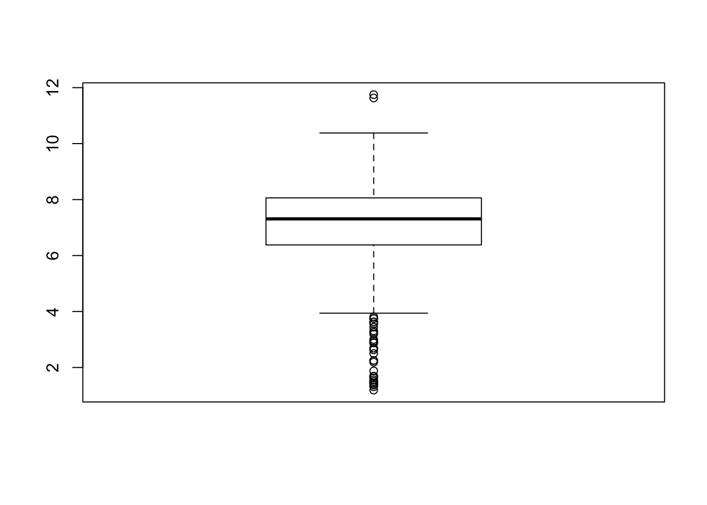
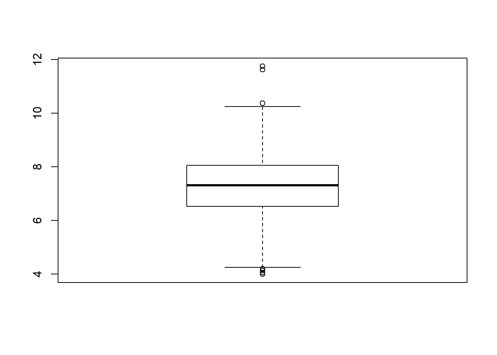

In this lesson we will introduce how to use functions to summarize data in a data frame, and to do basic data management tasks such as removing missing values.
After completing this lesson students will be able to
We’ll use the data set on births in North Carolina for this lecture. I read it into R here.
NCbirths <- read.csv("data/NCbirths.csv", header=TRUE)Functions take inputs, called arguments and provide outputs, or results. A few functions you have already used are head(), table() and subset(). Let’s look at the mean function again by typing ?mean.
The Usage section of the documentation includes two versions of the mean() function; What’s the difference? The first function
mean(x,...)is the most general definition of the mean function. This section also shows you what the default values for each argument are. This is a very important piece to pay attention. Sometimes the default behaviors are not what you want to happen.
mean(x, trim = 0, na.rm = FALSE, ...)In the Arguments section the help file defines what each argument does.
x is the object that you want to take the mean oftrim is a number from 0 to 0.5 that defines the fraction of observations to be excluded from each side before the mean is calculated.na.rm is a logical value (TRUE/FALSE) that tells R whether NA values should be stripped before the computation proceeds.... is called the ellipsis, and it is a way for R to pass arguments to or from other methods without the function having to name them explicitly.A function’s arguments can be named, or can be referred to by position. As an example, let’s look at the variable on the NCbirths data set that contains data on the fathers age: NCbirths$fage.
If we were to calculate the mean, we’d get NA.
mean(NCbirths$fage)## [1] NAWe need to tell R to remove the NA’s from the data prior to calculating the mean.
mean(NCbirths$fage, na.rm=TRUE)## [1] 30.25573It worked fine because I named the argument to remove missing values. What if I didn’t state what that argument was?
mean(NCbirths$fage, TRUE)## Error in mean.default(NCbirths$fage, TRUE): 'trim' must be numeric of length oneR is expecting a value for trim as the second argument and doesn’t know what to do with the value TRUE. If you name the arguments, then the order is irrelevant.
mean(na.rm=TRUE, x=NCbirths$fage, trim=.1)## [1] 30.01053But let’s not get that crazy.
R, at its heart, is a functional programming language cite: Adv. R by Wickham. We interact with the program, and data, using functions.
There are two main methods to summarize data. Both were introduced in the last lesson: table() for categorical factor variables, and summary() for numeric variables.
Frequency Tables for categorical data Let’s look at the variable for whether or not the baby was born underweight. R acknowledges it is a factor variable already.
class(NCbirths$lowbirthweight)## [1] "factor"You can create a frequency table by using the table() function. The useNA="always" argument tells R to always include an entry for missing values <NA>, even if there are none.
table(NCbirths$lowbirthweight, useNA="always")##
## low not low <NA>
## 111 889 0Summary statistics for numerical data Numerical variables can be summarized using statistics such as the min, max, mean and median. The function summary() prints out the five number summary, and includes the mean.
summary(NCbirths$visits)## Min. 1st Qu. Median Mean 3rd Qu. Max. NA's
## 0.0 10.0 12.0 12.1 15.0 30.0 9Mothers included in this data set visited the doctor on average 12.1 times during their pregnancy.
Sometimes we have a need to edit, or change data. We can change values of existing data by using logical statements
To choose all observations (rows) of a data set, where a variable is equal to some value, you would type
data[data$variable==value]Let’s look at the numerical distribution of birthweight of the baby.
summary(NCbirths$weight)## Min. 1st Qu. Median Mean 3rd Qu. Max.
## 1.000 6.380 7.310 7.101 8.060 11.750The value of 1 lb seems very low. The researchers you are working with decide that is a mistake and should be excluded from the data. We would then set all records where weight=1 to missing.
NCbirths$weight[NCbirths$weight==1] <- NABut what about other weights that aren’t quite as low as 1, but still unusually low?
boxplot(NCbirths$weight)
We could also set all birthweights less than a certain value to missing as well.
NCbirths$weight[NCbirths$weight < 4] <- NAWe’ll confirm that this recode worked by plotting the data again, and noticing that there are no values below 4 now.
boxplot(NCbirths$weight)
New variables should be added to the data frame. This can be done using $ sign notation.
The new variable you want to create goes on the left side of the assignment operator <-, and how you want to create that new variable goes on the right side.
data$new_variable <- creation statementExample: underage mothers
Let’s add a variable to identify if a mother in the North Carolina births data set was underage at the time of birth.
mage is under 18.underage and adult.ifelse() function.
ifelse(logical, value if TRUE, value if FALSE)logical argument is a statement that resolves as a boolean variable, as either TRUE or FALSE.TRUEFALSEMake a new variable underage on the NCbirths data set. If mage is under 18, then the value of this new variable is underage, else it is labeled as adult.
NCbirths$underage <- ifelse(NCbirths$mage <= 18, "underage", "adult")You should always make sure your code works as intended.
underage and see if records exist with the new categories, and if there are any missing values.table(NCbirths$underage, useNA="always")##
## adult underage <NA>
## 925 75 0mage itself. Let’s look at a row where mage=18 and mage=19, and columnshead(NCbirths[NCbirths$mage==18,c('mage', 'underage')])## mage underage
## 38 18 underage
## 39 18 underage
## 40 18 underage
## 41 18 underage
## 42 18 underage
## 43 18 underagehead(NCbirths[NCbirths$mage==19,c('mage', 'underage')])## mage underage
## 76 19 adult
## 77 19 adult
## 78 19 adult
## 79 19 adult
## 80 19 adult
## 81 19 adultHow does underage compare to maturity status?
table(NCbirths$underage, NCbirths$mature)##
## mature mom younger mom
## adult 133 792
## underage 0 75No underage mature mothers, that’s good.
There are several other Data Camp courses that all have the first chapter free that you can use to get a start on learning more about how to import and clean up data. Here are a few.